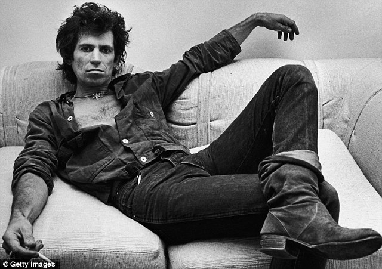
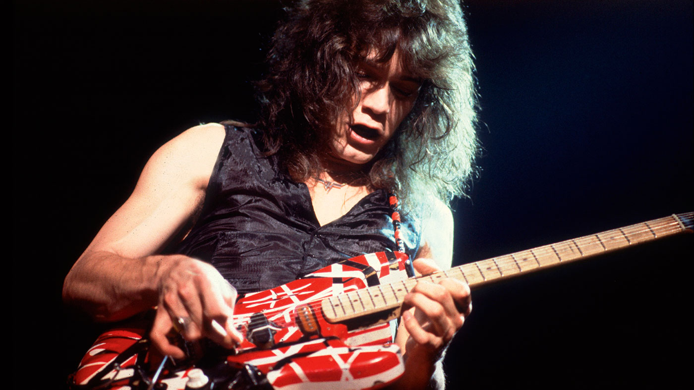
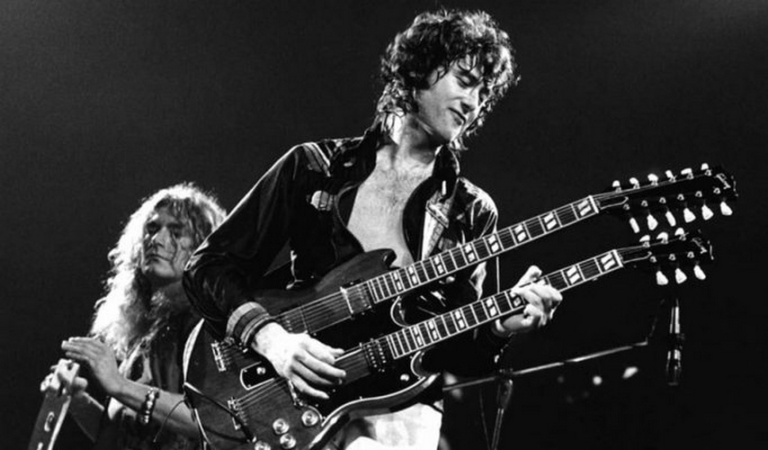

7 Câu Nói Truyền Cảm Hứng Từ Các Nghệ Sĩ Guitar Nổi Tiếng

29 Tháng 04, 2020

Admin
Rất nhiều người trong số họ đã từ giã cõi đời từ rất sớm, nhưng lúc sinh thời, họ đã để lại cho chúng ta những điều tuyệt vời như những ca khúc kinh điển, những phong cách âm nhạc, và bằng một cách nào đó họ đã thay đổi thế giới của chúng ta bằng quan điểm về cuộc sống của họ. Một vài người trong số họ vẫn đang sống cùng chúng ta và hàng ngày họ vẫn dùng âm nhạc của mình để truyền cảm hứng cho rất nhiều các nghệ sĩ trẻ khác.
1. Jimi Hendrix
“ Âm nhạc không nói dối. Nếu có thứ gì đó được thay đổi trên thế giới này, thì chỉ có thể xảy ra bởi âm nhạc. “
Tôi không cho rằng Jimi Hendrix là nghệ sĩ guitar xuất sắc nhất lịch sử, tuy nhiên sự thật là ông ấy chơi guitar một cách rất tự nhiên và khác biệt rất nhiều so với các nghệ sĩ khác. Ông ấy rất sáng tạo và đã nhân cách hóa âm nhạc của mình như thể là chính ông ấy vậy.
2. Keith Richards
“ Âm nhạc là thứ không thể thiếu trên đời. Sau thức ăn, không khí, nước và sự ấm áp, âm nhạc là thứ thiết yếu tiếp theo của cuộc sống . “

Cũng như Jimi Hendrix, Keith luôn là một người có tư tưởng đổi mới và đã tạo ra những bài hát và giai điệu tuyệt diệu. Đó là lý do tại sao rất nhiều người sẵn sàng chi rất nhiều tiền để nghe ông ấy chơi
3. Mark Knopfler
“ Luôn có những tiếng cười sau mỗi nỗi đau và luôn có nắng sau những cơn mưa, nếu mọi thứ vốn đều như vậy, sao bạn phải quan tâm chứ ? “
Trong những ca khúc của Mark Knopfler luôn có những phép ẩn dụ mà chỉ số ít người nghe có thể nhận ra. Ông ấy chỉ muốn nói rằng luôn có hi vọng trong hoàn cảnh khó khăn, luôn có những tia sáng có thể mang lại cho bạn hạnh phúc và ban không cần lo lắng về những gì sẽ xảy ra. Tuy nhiên nếu bạn lo lắng về việc bạn sẽ phải làm gì trong lúc khó khăn vì bạn quá để tâm vào nó, nó sẽ khiến tình hình càng tồi tệ hơn.
4. Eddie Van Halen
“ Nếu bạn muốn trở thành một ngôi sao hoặc đơn giản chỉ muốn nổi tiếng, thì hãy khỏa thân và chạy lông nhông trên phố, bạn sẽ gây được sự chú ý. Tuy nhiên nếu bạn muốn âm nhạc trở thành nguồn sống của bạn thân, hãy cứ chơi, chơi và chơi. Và biết đâu được, bạn sẽ đến được nơi mà bạn muốn “

Kỹ năng của Van Halen đến từ cách ông ấy chơi guitar, ông ấy hoàn toàn làm chủ được kỹ thuật Tapping một cách hoàn hảo, và thậm chí tiếp tục cải thiện nó.
5. Jimmy Page
“ Tôi tin rằng mỗi người chơi guitar vốn đã có sẵn một vài thứ đặc biệt độc nhất trong phong cách chơi của họ. Họ chỉ cần tự định nghĩa xem cái gì làm họ khác biệt và phát triển nó lên. “

Jimmy Page đã trở thành một trong những nghệ sĩ vĩ đại nhất mọi thời đại với Led Zeppelin. Ông cũng đồng thời là nhạc sĩ và nhà sản xuất nổi tiếng trong thế giới Rock, sở hữu một bộ sưu tập đồ sộ bao gồm những ca khúc, những bản độc tấu và những bản nhạc,... Jimmy đã dễ dàng trở thành một người khổng lồ của ngành công nghiệp âm nhạc, cũng như Mark và nhiều tên tuổi lớn khác.
6. Eric Clapton
“ Khi mà những tên tuổi gạo cội của nhạc Blue đều đã ra đi, tôi bắt đầu nhận ra rằng cần có ai đó tiếp tục giữ gìn truyền thống. Tôi thừa nhận tôi có trách nhiệm giữ cho thứ âm nhạc này tiếp tục tồn tại, và tôi cảm thấy đó là một điều khá vinh dự khi đảm nhận trọng trách đó.“
Chắc chắn chúng ta có thể nói Eric Clapton là nghệ sĩ guitar xuất sắc nhất thế giới hiện nay... Nếu quay lại những năm tháng đầu tiên của cuộc đời ông ấy, chúng ta có thể thấy một Eric phải đối mặt với rất nhiều khó khăn, cùng với rất nhiều chán nản và áp lực. Đôi lúc cuộc sống dường như muốn chống lại chúng ta, vấn đề là chúng ta liệu có thể thoát khỏi những tình huống đó không.
Là người duy nhất ba lần được vinh danh tại Rock and Roll Hall of Fame, Clapton đã nâng tầm cách chơi guitar và trở thành một trong những tấm gương đáng kính nhất trong kỉ nguyên của Rock. Phong cách của ông ấy trong việc sáng tác nhạc và ca khác đã thay đổi theo thời gian, nhưng ông vẫn luôn tỏ ra khác biệt trong chính phong cách đó và công chúng luôn yêu quý điều đó.
7. John Mayer
“ Tôi là một trong những lứa cuối cùng của thế hệ mà ở đó máy tính chưa trở lên phổ biến, nên chúng ta không bị lãng phí quá nhiều thời gian trên internet như bây giờ, do đó tôi có nhiều thời gian hơn để tập trung làm gì đó. “
Nếu bạn tập trung vào một thứ, bạn chắc chắn sẽ có thành tựu ... Nhưng nếu bạn làm quá nhiều thứ một lúc, bạn sẽ chỉ lãng phí thời gian và không bao giờ biết được bạn đang thật sự cần gì.